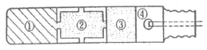
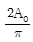
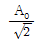
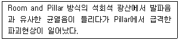
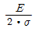
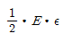
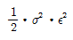
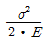
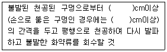

화약류관리산업기사 (2020-06-06 기출문제)
1과목: 일반화약학
1. 전기뇌관이 백금선이 가열되면 제일 먼저 무엇이 발화되는가?
- 점화약
- 연시약
- 전폭약
- 기폭약
(정답률: 30%)

2. 펜트리트 또는 헥소겐을 심약으로 하여서 마사, 면사, 종이테이프 등으로 피복한 제2종 도폭선의 최소 폭속기준은 얼마인가?
- 5000m/s이상
- 5500m/s이상
- 6000m/s이상
- 6500m/s이상
(정답률: 37%)
3. 다음 화약류 중 합성할 때 질산과 황산의 혼산을 사용하지 않는 것은?
- TNT
- 니트로글리세린
- 니트로셀룰로오스
- 뇌홍
(정답률: 40%)
4. 교질다이너마이트의 성질로 틀린 것은?
- 순폭성, 내수성이 좋다.
- 동결한 다이너마이트는 감소가 높다.
- 저장 안정성이 좋다.
- NG를 기제로 하여 가소성이 있다.
(정답률: 19%)
5. 화약류가 폭발 후 생성되는 가스로 가장 거리가 먼 것은?
- 이산화탄소
- 수증기
- 이산화질소
- 메탄가스
(정답률: 28%)
6. 한국산업표준(KS)에서 정한 산업폭약의 성능기준에 의한 다이너마이트의 순폭도는 얼마 이상이어야 하는가?
- 3
- 4
- 5
- 6
(정답률: 37%)
7. 다음은 직전식 전기뇌관의 개략도이다. 해당 번호를 옳게 나타낸 것은?

- 점화장치
- 점폭약
- 첨장약
- 연시약
(정답률: 50%)
8. 폭발시 염화수소 가스를 함유하는 결점이 있고 감도가 에민하므로 사용에 주의해야 할 것은?
- 흑색화약
- 분말다이너마이트
- 질산암모늄폭약
- 카알릿
(정답률: 55%)
9. 화약류를 제조할 때 산소공급제로 사용되는 것은?
- NaNO3
- 전분
- NaCl
- 분상알루미늄
(정답률: 60%)
10. 화약류 사용용도에 대한 설명으로 틀린 것은?
- 무연화약은 발사약으로 쓰인다.
- 다이너마이트는 기폭약으로 쓰인다.
- 흑색화약은 발사약으로 쓰인다.
- TNT는 주로 작약으로 쓰인다.
(정답률: 40%)
11. 화약의 위력(정적 효과)시험으로 가장 관계가 없는 것은?
- 탄동구포시험
- 유발시험
- 연주시험
- 탄동진자시험
(정답률: 50%)
12. 흑색화약 제조과정에서 2미혼화 공정에 해당하는 것은?
- 목탄과 유황의 혼합
- 유황과 질산칼륨의 혼합
- 질산칼륨과 목탄의 혼합
- 목탄, 질산칼륨 및 유황의 혼합
(정답률: 37%)
13. ANFO폭약이 원료로서 적합한 연료유는?
- 아세톤
- 경유
- 등유
- 휘발유
(정답률: 46%)
14. 비전기식뇌관에 사용하는 시그널튜브(또는 쇼크튜브)에 관한 설명 중 틀린 것은?
- 폭속 2,000m/s 정도
- 내부코팅화약 : HMX 와 Si의 혼합물
- 약량 : 20mg/m 정도
- 외경 : 3mm 정도
(정답률: 37%)
15. 뇌홍의 주원료에 해당하는 것은?
- Al
- Ag
- Hg
- Cu
(정답률: 55%)
16. 화약류에 대한 설명으로 옳은 것은?
- 검정폭약이란 광산갱내 또는 탄가루 존재하에서는 사용할 수 없는 폭약이다.
- 지발전기뇌관에는 연시장치가 없고 순발 전기뇌관은 공업뇌관의 공간부에 기폭약을 접하여 연시약을 채운 것이다.
- 도화선의 성능시험방법은 점화력, 연소속도 및 내수성 등을 측정하여 판정한다.
- 폭약의 추진 효과를 판별하는 방법에는 캐스트의 맹도시험법이 있다.
(정답률: 40%)
17. 화약류를 성능에 의한 분류 할 때, 폭약에 속하지 않는 것은?
- DDNP
- 무연화약
- TNT
- 다이너마이트
(정답률: 50%)
18. 인체의 정전 용량을 0.0003㎌로 하고, 이것이 10000V로 대전하였다고 가정하면 대전에너지는 몇 J인가?
- 0.015
- 0.15
- 1.5
- 15
(정답률: 40%)
19. RDX의 성질에 대한 설명으로 틀린 것은?
- 충격감도는 펜트리트보다 둔감하다.
- 흡수성이 커서 다이너마이트의 활성을 증대시키기 위해 사용된다.
- 알코올에 잘 녹지 않고 아세톤에 녹는다.
- 첨장약, 도폭선의 심약으로 쓰인다.
(정답률: 28%)
20. 뇌홍 폭분은 뇌홍과 염소산칼륨을 어떤 비율로 혼합한 것인가? (단, 뇌홍: 염소산 칼륨의 비율이다.)
- 80:20
- 20:80
- 40:60
- 60:40
(정답률: 46%)
2과목: 발파공학
21. 발파기가 갖추어야할 조건으로 틀린 것은?
- 절연성이 좋을 것
- 메탄, 탄진에 안전할 것
- 파손되지 않도록 견고할 것
- 도난 방지를 위해 중량이고 대형일 것
(정답률: 20%)
22. 수준발파(leveling)에 대한 설명으로 틀린 것은?
- 일반적으로 수직천공을 실시하여 발파한다.
- 암석 파쇄입도를 크게 하기 위해 발파공사이 지연시간을 길게 한다.
- 비산위험과 지반진동을 줄이기 위해 소구경의 발파공을 사용한다.
- 계단높이가 최대 저항선(maximumburden)의 2배보다 낮은 곳에 사용한다.
(정답률: 9%)
23. 크기가 2.0m×2.0m인 갱도에 공경 30mm로 20공을 천공하고 시험발파를 하여 굴진길이 1.2m, 최소저항선 0.45m로서 표준발파가 실시되었다면, 실제 발파에서 시험발파와 동일한 조건으로 1.8m×1.8m의 갱도를 1m 굴진에 요하는 소요공수는 얼마인가? (단, 암석계수는 0.032이다.)
- 12공
- 14공
- 16공
- 18공
(정답률: 17%)
24. 잔류약 발생의 원인으로 틀린 것은?
- 분말계 폭약의 비중이 과대할 경우
- 천공장 또는 장약장에 비해서 천공간격이 좁을 경우
- 발파기의 용량 부족 또는 뇌관의 백금선이 절단된 경우
- 약포간에 접촉하지 않고 공간을 남긴채 장전할 경우
(정답률: 20%)
25. 폭약의 폭발에 의해 암반 내에 발생한 충격파는 3차원적으로 전파해 가지만 자유면에서 충격파는 반사되고 자유면측에서 폭원방향을 향해 연속적으로 암반의 파괴가 진행된다는 파괴이론은?
- 분쇄이론
- 압축파괴이론
- 전단파괴이론
- 인장파괴이론
(정답률: 28%)
26. 표준장약일 경우 채석용적과 저항선의 관계는?
- 채석용적은 저항선에 비례
- 채석용적은 저항선에 반비례
- 채석용적은 저항선의 제곱에 비례
- 채석용적은 저항선의 세제곱에 비례
(정답률: 30%)
27. 벤치발파에서 벤치의 높이가 6m이고, 최소저항선이 1.5m일 때 천공장으로 가장 합리적인 것은?
- 2.45m
- 4.42m
- 6.45m
- 8.42m
(정답률: 10%)
28. 천공경이 38mm, 장약길이는 천공경의 12배 최소저항선이 180cm일 때 암석계수(Ca)는?
- 0.0014
- 0.0063
- 0.0083
- 0.0097
(정답률: 0%)
29. 환경부령으로 정한 생활진동 규제기준상 주거지역 및 학교, 종합병원, 공공도서관 등의 지역에서 주간(06:00~22:00) 발파진동에 대한 규제기준치는?
- 50dB(V)이하
- 60dB(V)이하
- 70dB(V)이하
- 75dB(V)이하
(정답률: 10%)
30. 수중발파를 위한 발파설계로 옳은 것은? (단, Gustafsson의 제안방법이다.)
- 경사공의 경우는 비장약량을 1.0kg/m3로 하나, 수직공의 경우는 파쇄가능성을 높게 하기 위해서 비장약량을 30% 증가한 1.3kg/m3로 한다.
- 수압을 보정하기 위해서 수심 m당 0.03kg/m3의 비장약량을 증가시킨다.
- 진흙으로 암반이 덮여있는 경우, 진흙층의 두께 m당 0.02kg/m3의 비장약량을 증가시킨다.
- 암석층을 보정하기 위해서 계단높이 m당 0.01kg/m3의 비장약량을 증가시킨다.
(정답률: 20%)
31. 발파에 의해 발생하는 암석의 비산에 대한 설명으로 옳은 것은?
- 공경이 작을수록 비산의 위험이 크다.
- 터널 내에서는 중앙부터 점화되기 때문에 비교적 근거리비산을 한다.
- 암석에 균열이 많을수록 가스 압력에 의한 작은 암석조각들이 주위로 비산될 위험성이 크다.
- 약한 폭약으로 많은 부분을 장약하는것보다 강력한 공저장약과 큰 무장약 부분이 존재하는 것이 바람직하다.
(정답률: 20%)
32. 결선에 대한 설명으로 틀린 것은?
- 도폭선의 분기방향은 도폭선의 폭발진행방향으로 분기되어서는 안 된다.
- 제발발파 시 전기뇌관의 저항이 통일되지 않으면 직렬식 결선을 해서는 안 된다.
- 제발발파 시 병렬식으로 결선할 경우에는 전원으로 동력선, 전등선을 이용할 수 있다.
- 직·병렬식 결선의 경우 각 분로의 저항을 같게 하여 분로균형(series balancing)을 이루어야 한다.
(정답률: 9%)
33. 폭약위력계수가 1인 폭약 2kg으로 표준발파가 이루어졌다. 폭약위력계수가 1.37인 폭약을 이용하여 발파 시 표준발파가 되기 위한 장약량은? (단, 기타 조건은 동일하다고 가정한다.)
- 1.46kg
- 2.0kg
- 2.74kg
- 3.0kg
(정답률: 20%)
34. 스무스 블라스팅(smooth blasting)에 대한 설명으로 틀린 것은?
- 효과적인 발파를 위해서 공경보다 직경이 작은 정밀폭약을 이용한다.
- 스무스 발파공은 가능한 한 동시 기폭시키는 것이 좋다.
- 스무스 발파공의 간격은 최소저항선보다 작게 한다.
- 층리, 절리 등 불연속면이 발달한 암반일수록 스무스 블라스팅의 효과가 크다.
(정답률: 20%)
35. 발파 진동속도를 예측하기 위한 Devine이 실험식으로 제시한 식은 V=H(D/W1/2)-β이다. 이 식에 대한 설명으로 옳은 것은? (단, V: 지반진동속도, H, β: 상수, D: 폭원으로부터의 거리, W: 지발당 최대장약량)
- 발파 진동속도는 장약량 및 거리에 비례한다.
- 발파 진동속도는 장약량 및 거리에 반비례한다.
- 발파 진동속도는 장약량에 비례하고 거리에 반비례한다.
- 발파 진동속도는 거리에 비례하고 장약량에 반비례한다.
(정답률: 20%)
36. 평행공 심빼기 발파에 대한 설명으로 틀린 것은?
- 평행공 심빼기의 기본 개념은 폭약을 넣지 않은 무장약공을 천공하여 자유면의 역할을 하도록 하는 것이다.
- 천공길이의 관계없이 경사공 심빼기보다 발파효과가 좋다.
- 파석의 비산거리가 비교적 적고 막장부근에 집중되므로 파석처리가 용이하다.
- 심빼기 공은 평행 천공이 요구되고, 천공위치는 큰 편차가 허용되지 않으므로 천공기술에 숙련을 요한다.
(정답률: 19%)
37. 장전된 화약류의 불발된 장약에 대한 조치로 틀린 것은?
- 불발공에 바로 천공하고 전폭약포를 장전하여 다시 점화할 것
- 불발된 천공된 구멍에 고무호스로 물을 주입하고 그 물의 힘으로 메지와 화약류를 흘러나오게 하여 불발된 화약류를 회수할 것
- 불발된 발파공에 압축공기를 넣어 메지를 뽑아내거나 뇌관에 영향을 미치지 아니하게 하면서 조금씩 장전하고 다시 점화할 것
- 장전된 화약류를 점화하여도 그 화약류가 폭발되지 아니하거나 폭발여부의 확인이 곤란한 때에는 점화 후 15분 이상을 경과한 후가 아니면 화약류를 장전한 곳에 사람의 출입이나 접근을 금지하여야 한다.
(정답률: 20%)
38. 계단식 발파에서 열과 열 사이의 지연시간에 따른 발파결과로 틀린 것은?
- 긴 지연시간은 여굴을 감소시킨다.
- 긴 지연시간은 지반 진동의 수준을 감소시킨다.
- 짧은 지연시간은 폭력, 폭풍을 감소시킨다.
- 짧은 지연시간은 비산에 대한 더 많은 잠재력을 가진다.
(정답률: 20%)
39. 공발(Blown-out shot)의 일반적인 원인으로 옳지 않은 것은?
- 약장약일 때
- 전색이 불충분할 때
- 암반에 많은 균열층이 있을 때
- 디커플링 지수가 1에 가까울 때
(정답률: 28%)
40. 일반적인 진동(정현진동)의 표시법 중 평균치를 나타내는 것은? (단, Ao는 진동의 최대값(peak level)을 나타낸다.)
- 2Ao
- 0.5Ao


(정답률: 10%)
3과목: 암석역학
41. Mohs 경도계로 측정할 수 있는 경도의 종류로 옳은 것은?
- 굵기경도
- 반발경도
- 압입경도
- 마모경도
(정답률: 10%)
42. 다음 내용과 가장 관련 깊은 것은?

- 크리프(creep)
- 암반파열(rock burst)
- 피로파괴(fatigue failure)
- 파괴인성(fracture toughness)
(정답률: 9%)
43. 암반사면의 평면파괴 조건으로 틀린 것은?
- 불연속면의 주향이 사면의 주향과 평행하여야 한다.
- 불연속면의 경사각은 사면의 경사각보다 작아야 한다.
- 불연속면이 사면에 노출되어야 한다.
- 불연속면의 마찰각은 불연속면의 경사각보다 커야 한다.
(정답률: 10%)
44. SMR(Slope Mass Rating)분류법에서 고려되는 요소가 아닌 것은?
- 구성광물의 종류
- 불연속면의 경사
- 사면의 굴착방법
- 사면과 불연속면의 주향 방향의 차이
(정답률: 28%)
45. 오버코어링(overcoring)방법을 이용한 현지암반 응력측정법이 아닌 것은?
- 공경변형법
- 공저변형법
- 공벽변형법
- 수압파쇄법
(정답률: 19%)
46. 지름이 12m인 원형 터미널의 유효크기(equivalent dimension)가 7.7m인 경우 굴착지보계수(ESR)는?
- 1.3
- 1.6
- 2.0
- 2.5
(정답률: 19%)
47. 암석 또는 흙의 성질에 대한 설명으로 틀린 것은?
- 공극률이 50%인 물질이 존재한다.
- 간극비가 0.5인 물질이 존재한다.
- 공극률이 200%인 물질이 존재한다.
- 간극비가 2인 물질이 존재한다.
(정답률: 17%)
48. 절리면에 대한 직접전단시험으로부터 직접 얻을 수 있는 자료가 아닌 것은?
- 절리면의 전단강성
- 절리면의 점착강도
- 절리면의 마찰각
- 절리면의 압축강도
(정답률: 19%)
49. 석회석 시험편의 일축 압축강도가 85MPa, 일축 인장강도가 8MPa라고 할 때, 모어 응력원의 파괴 포락선을 직선으로 가정한다면 전단강도는?
- 10.5MPa
- 13.0MPa
- 14.2MPa
- 15.6MPa
(정답률: 10%)
50. 터널설계와 관련한 현장시험 중에서 현지암반에 작용하는 초기응력을 측정하는 시험법은?
- Flat jack법
- 압력터널시험
- 공내재하시험
- Lugeon시험
(정답률: 10%)
51. 단위체적의 탄성체에 서서히 힘을 가할 때 응력(σ)이 0에서 σ까지 증가하는 사이에 변형률(ε)이 0에서 ε까지 변화되면 단위체적당 탄성변형률에너지(W)는 어떻게 표시되는가?




(정답률: 10%)
52. 터널 계측항목이 아닌 것은?
- 내공변위측정
- 외공변위측정
- 지붕변위측정
- 천단침하측정
(정답률: 10%)
53. 원유를 암반 내 지하공동에 저장하는 데 있어 활용이 기대되는 지하특성이 아닌 것은?
- 단열성
- 차광성
- 격리성
- 차음성
(정답률: 20%)
54. 크리프 현상에 대한 설명으로 옳은 것은?
- 응력의 증가에 따라 변형률이 증가하는 현상이다.
- 응력의 감소에 따라 변형률이 증가하는 현상이다.
- 응력을 일정하게 유지했을 때 변형률이 시간에 따라 증가하는 현상이다.
- 응력을 일정하게 유지했을 때 변형률이 시간에 따라 감소하는 현상이다.
(정답률: 20%)
55. 암석의 동적인 성질에 대한 설명으로 틀린 것은?
- 암석의 동적강도는 정적강도보다 크다.
- 암석은 반복되는 하중에 의해 강도가 저하된다.
- 충격파에 의한 응력은 시간과 거리에 따라 감소한다.
- 탄성적인 암석일수록 탄성파에너지가 급격히 증가한다.
(정답률: 19%)
56. 암석의 파괴이론 중 Tresca 이론에 대한 설명으로 틀린 것은?
- 인장강도와 압축강도의 크기가 같게 계산된다.
- 중간주응력은 파괴에 영향을 미치지 않는다.
- 물체가 전단응력에 의하여 파괴된다고 가정한다.
- 전단강도를 설명하기 위하여 마찰각과 점착강도가 필요하다.
(정답률: 0%)
57. 어느 암석의 강성률이 0.6×105MPa이고, 푸아송 수가 4이면 이 암석의 탄성률은?
- 1.00×105MPa
- 1.50×105MPa
- 2.00×105MPa
- 2.50×105MPa
(정답률: 0%)
58. 다음 중 탄소성 해석이 가능한 물체는?
- Hookean material
- Newtonian material
- Maxwell material
- St. Venant material
(정답률: 10%)
59. 지름이 5cm이고, 길이가 2.5cm인 원주형 암석시편으로 압열인장강도시험을 실시하였다. 암석시편이 50kN에서 파괴되었다면 인장강도는?
- 5.5MPa
- 15.5MPa
- 25.5MPa
- 35.5MPa
(정답률: 20%)
60. 암석 내 특정한 균열의 형태나 외부응력 조건에 따라 균열 첨단에 인접한 영역에서 집중되는 응력의 크기를 결정하는 요소는?
- 균열계수
- 파괴속성계수
- 응력확대계수
- 변형률전파계수
(정답률: 19%)
4과목: 화약류 안전관리 관계 법규
61. 화약류의 사용장소를 관할하는 경찰서장의 사용허가를 받지 아니하고 화약류를 발파 또는 연소시킨 경우의 벌칙은? (단, 예외 사항은 제외)
- 10년 이하의 징역 또는 2천만원 이하의 벌금
- 5년 이하의 징역 또는 1천만원 이하의 벌금
- 3년 이하의 징역 또는 700만원 이하의 벌금
- 2년 이하의 징역 또는 500만원 이하의 벌금
(정답률: 28%)
62. 피뢰장치의 피뢰도선 및 가공지선의 전극 기준으로 옳은 것은?
- 전극은 구리판 또는 그 이상의 전도성이 있는 금속으로 할 것
- 전극은 피뢰도선 마다 2개 이상으로 할 것
- 전극을 땅에 묻을 때에 그 부근에 가스관이 있을 경우에는 그로부터 2m 이상의 거리를 둘 것
- 전극의 접지저항은 피뢰도선이 2줄 이상인 때에는 그 1줄마다 10[Ω]이하로 할 것(예외사항 제외)
(정답률: 20%)
63. 화약류 운반방법의 기술상의 기준으로 옳은 것은?
- 디아조디니트로페놀을 주로 하는 기폭약은 수분 또는 알코올분이 23%정도 머금은 상태로 운반해야 한다.
- 뇌홍을 주로 하는 기폭약은 수분 또는 알코올분이 25% 정도 머금은 상태로 운반해야 한다.
- 펜타에리스릿트는 수분 또는 알코올분이 20% 정도 머금은 상태로 운반해야 한다.
- 니트로셀룰로오스는 수분 또는 알코올분이 25% 정도 머금은 상태로 운반해야 한다.
(정답률: 20%)
64. 화약류 제조시설의 기준으로 옳은 것은?
- 제조소는 위험구역과 비위험구역으로 구분하되, 제조소 외부에 담장이 설치되었다면 위험구역에 별도의 경계울타리를 설치할 필요는 없다.
- 경계울타리가 산림 안에 설치된 경우에는 그 경계울타리를 따라 폭 1m 이상의 빈터를 두어 화재시에 연소를 방지할 수 있도록 하여야 한다.
- 일광건조장의 건조대는 1m 이상의 높이로 해야 한다.
- 폭발시험장, 연소시험장, 발사시험장 및 폐약소각장은 위험구역안에 설치하고, 흙둑방폭벽 또는 방화벽으로 구획하여 그 주위의 수목, 잡초 등을 항상 벌채하여야 한다.
(정답률: 20%)
65. 화약류관리(제조)보안책임자 면허를 반드시 취소해야 하는 사유가 아닌 것은?
- 거짓이나 그 밖의 옳지 못한 방법으로 면허를 받은 사실이 드러난 때
- 국가기술자격법에 의하여 자격이 취소된 때
- 면허를 다른 사람에게 빌려준 때
- 화약류를 취급함에 있어 고의 또는 중대한 과실로 폭발 등의 사고를 일으키어 사람을 죽거나 다치게 한 때
(정답률: 20%)
66. 화약류관리(제조)보안책임자 면허를 받은 사람은 그 면허를 받은 날로부터 몇 년마다 갱신하여야 하는가?
- 3년
- 5년
- 7년
- 10년
(정답률: 20%)
67. 불발된 장약에 대한 조치에 관한 내용이다. ( )에 알맞은 수치를 차례대로 나타낸 것은?

- 50, 40
- 50, 30
- 60, 40
- 60, 30
(정답률: 20%)
68. 저장 중인 다이너마이트 등의 약포에서 니트로글리세린이 스며나와 마루바닥을 오염시킨 경우 니트로글리세린을 분해하기 위해 제조하는 액체의 성분으로 옳은 것은?
- 물 150mL + 설탕 100g + 알코올 1L
- 물 150mL + 설탕 100g + 벤젠 1L
- 물 150mL + 수산화나트륨 100g + 알코올 1L
- 물 150mL + 수산화나트륨 100g + 벤젠 1L
(정답률: 20%)
69. 화약과 비슷한 추진적 폭발에 사용될 수 있는 것으로서 대통령령이 정하는 것에 포함되지 않는 것은?
- 무수규산을 주로 한 화약
- 크롬산납을 주로 한 화약
- 브로모산염을 주로 한 화약
- 과염소산염을 주로 한 화약
(정답률: 20%)
70. 총포·도검·화약류 등의 안전관리에 관한 법률상 제조업자 및 판매업자에 대한 필요적 허가 취소사유에 해당하지 않는 것은?
- 허가의 결격사유에 해당하게 된 때
- 판매시설 또는 화약류저장소에 대해 지정된 기간내에 완성검사를 받지 못한 때
- 법에 의한 지시명령을 3회 위반하였을 때
- 사업개시 후 정당한 사유 없이 1년 이상 휴업한 때
(정답률: 0%)
71. 허가를 받지 아니하고 양수할 수 있는 화약류의 수량으로 옳지 않은 것은?
- 수렵용 실탄은 1일 100개 이하
- 수렵용 공포탄은 1일 200개 이하
- 사격용 실탄은 1일 200개 이하
- 「광업법」에 따라 광물의 채굴을 목적으로 광물을 채굴하는 사람은 화약 및 폭약각 1125g 이하
(정답률: 10%)
72. 화약류 운반신고 및 신고필증과 관련한 설명으로 옳은 것은?
- 화약류를 운반하지 아니하게 된 때는 운반신고필증을 발송지 관할 경찰서장에게 반납한다.
- 화약류의 운반이 완료되엇을 때는 운반신고필증을 발송지 관한 경찰서장에게 반납한다.
- 화약류의 운반을 하지 못하고 운반기간이 경과했을 때는 운반신고필증을 도착지 관할 경찰서장에게 반납한다.
- 화약류운반신고서는 특별한 사정이 없는한 운반개시 6시간 전까지 발송지 관할 경찰서장에게 제출한다.
(정답률: 20%)
73. 화약류관리보안책임자의 선임기준으로 옳은 것은?
- 화약류저장소의 폭약 저장 합계량이 연중 20톤 이상이면 1급 화약류관리보안책임자를 선임하여야 한다.
- 장난감용 꽃불류저장소에는 3급 화약류 관리보안책임자를 선임할 수 있다.
- 화약 또는 폭약의 사용 합계량이 월중 1톤 이상이면 1급 화약류관리보안책임자를 선임하여야 한다.
- 화약 또는 폭약의 사용 합계량이 월중 50kg미만이면 3급 화약류관리보안책임자를 선임할 수 있다.
(정답률: 10%)
74. 행전안전부령으로 정한 특별한 용기에 들어 있는 공업용 뇌관과 동일 차량에 함께 실을 수 있는 폭약의 중량 기준으로 옳은 것은?
- 0.25톤 이하
- 1.25톤 이하
- 2.25톤 이하
- 4.5톤 이하
(정답률: 20%)
75. 보안물건의 정의로 옳은 것은?
- 화약류의 취급상의 위해로부터 보호가 요구되는 장비·시설 등을 말한다.
- 화약류를 사용하는데 필요한 안전거리내의 장비·시설 등을 말한다.
- 화약류를 사용하는 장소부근의 장비·시설 등을 말한다.
- 화약류를 운반, 사용하는 장소로부터 근거리의 장비·시설 등을 말한다.
(정답률: 17%)
76. 꽃불류저장소의 위치, 구조 및 설비의 기준으로 옳지 않은 것은?
- 단층 콘크리트블록조로 하고, 기초는 지면보다 높게 한다.
- 저장소 벽의 두께는 콘크리트조일 때 20cm이상으로 한다.
- 저장소의 마루 밑에는 지상 1급 저장소에 준하는 환기통을 저장소의 크기에 따라 2개 이상 설치한다.
- 저장소 주위에는 흙둑, 간이흙둑 또는 방폭벽을 설치한다.
(정답률: 19%)
77. 운반신고를 하지 아니하고 운반할 수 있는 화약류의 종류 및 수량으로 맞는 것은?
- 총용뇌관 10만개
- 도폭선 2500m
- 미진동파쇄기 1만개
- 폭발천공기 700개
(정답률: 20%)
78. 화약류운반용 축전지차의 구조 기준 중 축전지의 사용전압은 얼마 이하로 하여야 하는가?
- 12V 이하
- 24V 이하
- 50V 이하
- 80V 이하
(정답률: 19%)
79. 화약류저장소 외의 장소에 저장할 수 있는 화약류의 수량으로 옳은 것은? (단, 화약류저장소가 있는 사람으로, 6월 이내에 종료하는 토목사업의 경우)
- 미진동파쇄기 50개
- 도폭선 100m
- 총용뇌관 200개
- 공업용뇌관 및 전기뇌관 500개
(정답률: 10%)
80. 화약류를 수출 또는 수입하고자 하는 사람은 행정안전부령이 정하는 바에 의하여 그때마다 누구의 허가를 받아야 하는가? (단, 화공품은 제외한다.)
- 행정안전부장관
- 경찰청장
- 지방경찰청장
- 경찰서장
(정답률: 19%)